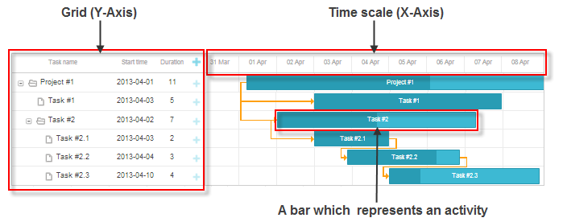
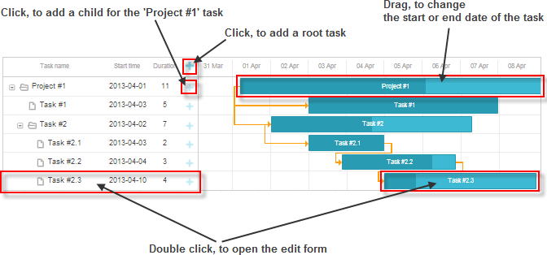
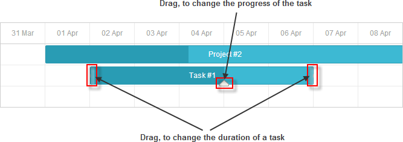
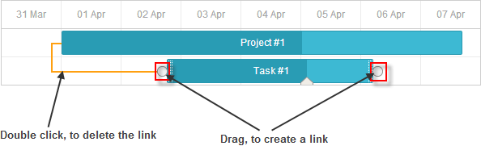

Interface of Gantt Chart
A Gantt chart is one of the most popular ways to show the activities occurred over a time period.
- Each activity in the chart is displayed as a bar.
- The X-Axis of the chart is a time scale.
- The Y-Axis of the chart is a grid with the names of activities and other activity-related information. The first column of the
grid is a tree that presents the hierarchy of the tasks. You can close, open a branch by clicking on the '+'/'-' icon near the title. Note, the Gantt chart displays only the tasks opened in the tree.

Managing tasks
Adding new tasks
- To add a root task, click on the "+" icon in the header of the grid.
- To add a child task, click on the "+" icon in the row of the parent task.
Editing tasks
- To edit a task, double click on the bar in the timeline or on the task record in the grid. Then, make the changes and click: "Save" - to save the changes, "Cancel" - to cancel the changes.
- To change the start (end) date of a task, drag the task along the timeline area.
- To change the duration of a task, hover the cursor over the task bar and drag the bar by the left or right border.
- To change the progress of a task, hover the cursor over the task bar and drag the progress knob.
Deleting tasks
- To delete a task, double click on the bar in the timeline or on the task record in the grid. Then, click "Delete" in the opened edit form.


Managing dependency links
Adding new links
- To add a new link for a task, hover the cursor over the task and drag the round handle at the start (end) of the task to a round handle of the other task.
Deleting tasks
- To delete a link, double click on the link and click "Delete" in the confirm window.

Back to top